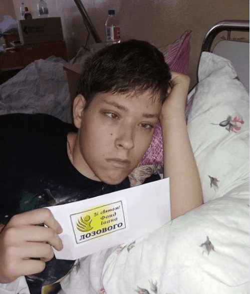

Targeted Assistance:

December 10, 2020 - 9-year-old boy Vasyl Ryabukha from Kyrykivka. Gift from the Lozowy Fund: UAH 10,000 to help with medical treatment.
June 16, 2020 - Anna Dryhafrom Yabluchne. Gift from the Lozowy Fund: Printer.

June 1, 2020 - Playground in the neighborhood in Lebedyn. Gifts from the Lozowy Fund: Toy house, a slide and rocking horse.

May 2, 2019 - Assistance for the widow of a war hero - Davydova Svitlana Oleksandrivna in Trostyanets. Gift from the Lozowy Fund: Food processor.

December 20, 2018 - Maxym Kapran, a talented handicapped youngster from Lebedyn. Gift from the Lozowy Fund: Financial aid.

November 1, 2018 - Okhtyrka Children’s Hospital. Gift from the Lozowy Fund: Financial assistance.